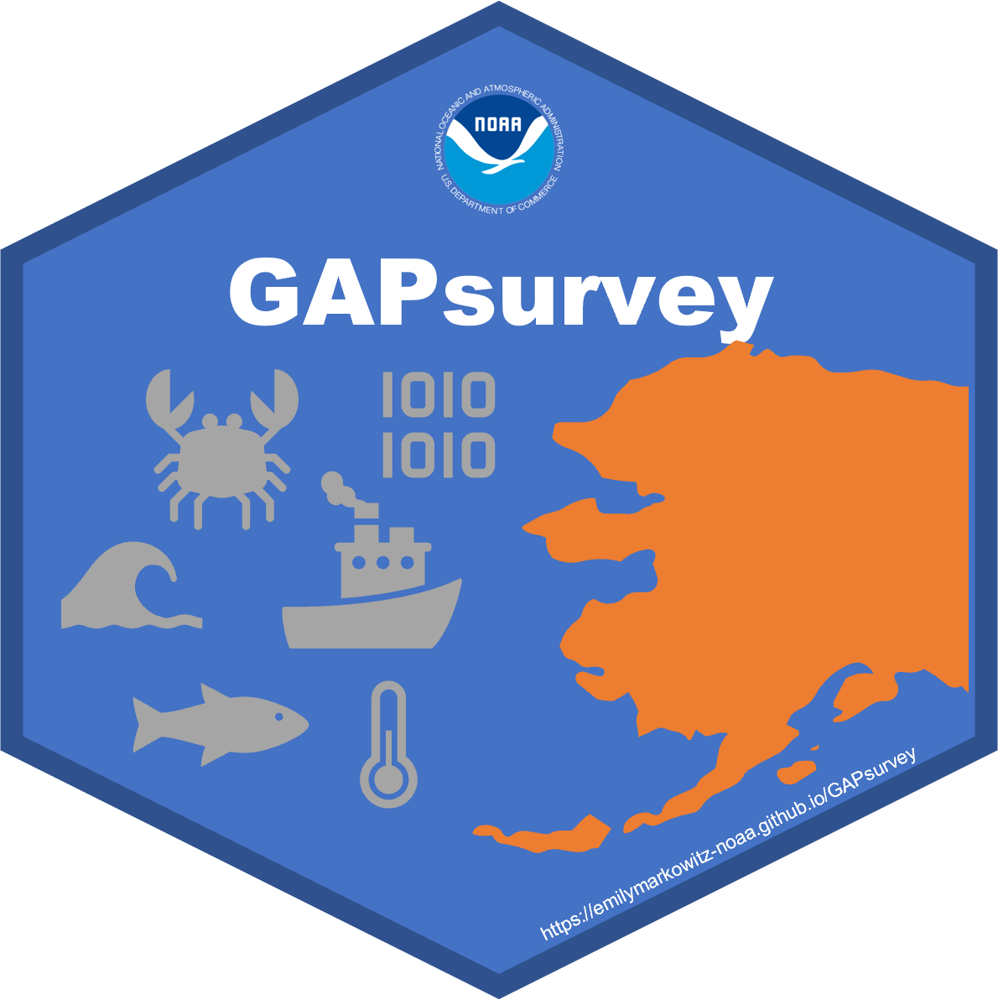

GAPsurvey 
This code is always in development
This code is primarally maintained by:
Emily Markowitz (Emily.Markowitz AT noaa.gov; @EmilyMarkowitz-NOAA)
Megsie Siple (Margaret.Siple AT noaa.gov; @MargaretSiple-NOAA)
Liz Dawson (Liz.Dawson AT noaa.gov; @liz-dawson-NOAA)
Alaska Fisheries Science Center,
National Marine Fisheries Service,
National Oceanic and Atmospheric Administration,
Seattle, WA 98195

Make sure the necessary packages are installed
library(devtools)
devtools::install_github("afsc-gap-products/GAPsurvey")
library(GAPsurvey)
# Alternatively
remotes::install_github("afsc-gap-products/GAPsurvey@main")Metadata
This package was last produced using:
#> R version 4.2.3 (2023-03-15 ucrt)
#> Platform: x86_64-w64-mingw32/x64 (64-bit)
#> Running under: Windows 10 x64 (build 19045)
#>
#> Matrix products: default
#>
#> locale:
#> [1] LC_COLLATE=English_United States.utf8 LC_CTYPE=English_United States.utf8 LC_MONETARY=English_United States.utf8
#> [4] LC_NUMERIC=C LC_TIME=English_United States.utf8
#>
#> attached base packages:
#> [1] stats graphics grDevices utils datasets methods base
#>
#> other attached packages:
#> [1] badger_0.2.3 ggplot2_3.4.1 pkgdown_2.0.7 RODBC_1.3-20 roxygen2_7.2.3 devtools_2.4.5 usethis_2.1.6 here_1.0.1
#>
#> loaded via a namespace (and not attached):
#> [1] pkgload_1.3.2 jsonlite_1.8.4 shiny_1.7.4 askpass_1.1 BiocManager_1.30.20 rvcheck_0.2.1
#> [7] yulab.utils_0.0.6 yaml_2.3.7 remotes_2.4.2 sessioninfo_1.2.2 pillar_1.9.0 glue_1.6.2
#> [13] digest_0.6.31 RColorBrewer_1.1-3 promises_1.2.0.1 snakecase_0.11.0 colorspace_2.1-0 htmltools_0.5.5
#> [19] httpuv_1.6.9 pkgconfig_2.0.3 gitcreds_0.1.2 purrr_1.0.1 xtable_1.8-4 scales_1.2.1
#> [25] processx_3.8.0 later_1.3.0 timechange_0.2.0 tibble_3.2.1 openssl_2.0.6 generics_0.1.3
#> [31] ellipsis_0.3.2 cachem_1.0.7 withr_2.5.0 janitor_2.2.0 credentials_1.3.2 cli_3.6.1
#> [37] magrittr_2.0.3 crayon_1.5.2 mime_0.12 memoise_2.0.1 evaluate_0.20 ps_1.7.3
#> [43] fs_1.6.1 fansi_1.0.4 xml2_1.3.3 pkgbuild_1.4.0 httr2_0.2.2 gh_1.4.0
#> [49] profvis_0.3.7 tools_4.2.3 prettyunits_1.1.1 lifecycle_1.0.3 gert_1.9.2 stringr_1.5.0
#> [55] munsell_0.5.0 callr_3.7.3 compiler_4.2.3 rlang_1.1.0 grid_4.2.3 rstudioapi_0.14
#> [61] sys_3.4.1 rappdirs_0.3.3 htmlwidgets_1.6.2 miniUI_0.1.1.1 rmarkdown_2.20 gtable_0.3.3
#> [67] curl_5.0.0 R6_2.5.1 lubridate_1.9.2 knitr_1.42 dplyr_1.1.1 fastmap_1.1.1
#> [73] utf8_1.2.3 rprojroot_2.0.3 dlstats_0.1.6 desc_1.4.2 stringi_1.7.12 Rcpp_1.0.10
#> [79] vctrs_0.6.1 tidyselect_1.2.0 xfun_0.38 urlchecker_1.0.1NOAA README
This repository is a scientific product and is not official communication of the National Oceanic and Atmospheric Administration, or the United States Department of Commerce. All NOAA GitHub project code is provided on an ‘as is’ basis and the user assumes responsibility for its use. Any claims against the Department of Commerce or Department of Commerce bureaus stemming from the use of this GitHub project will be governed by all applicable Federal law. Any reference to specific commercial products, processes, or services by service mark, trademark, manufacturer, or otherwise, does not constitute or imply their endorsement, recommendation or favoring by the Department of Commerce. The Department of Commerce seal and logo, or the seal and logo of a DOC bureau, shall not be used in any manner to imply endorsement of any commercial product or activity by DOC or the United States Government.
License
Software code created by U.S. Government employees is not subject to copyright in the United States (17 U.S.C. §105). The United States/Department of Commerce reserve all rights to seek and obtain copyright protection in countries other than the United States for Software authored in its entirety by the Department of Commerce. To this end, the Department of Commerce hereby grants to Recipient a royalty-free, nonexclusive license to use, copy, and create derivative works of the Software outside of the United States.

U.S. Department of Commerce | National Oceanographic and Atmospheric Administration | NOAA Fisheries